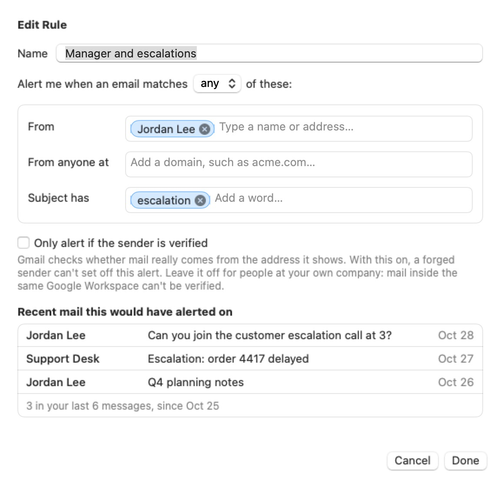

How it works
The alerts, the rules behind them, and the few minutes it takes to set up.
The alerts
By default the alert is a card on the display you're using. You can switch to a banner across the top of every display, or a full-screen alert on every display. All three stay up until you open or dismiss the message.


The sender and subject show straight away. The preview stays hidden until you choose Show Preview, because it's written by whoever sent the email; you can turn that off in Settings, or hide the subject too.
Writing a rule
A rule says whose mail gets through: particular senders, anyone at a domain, or mail whose subject has a word you choose. It can alert when an email matches any of these, or only when it matches all of them.

The list comes from your recent inbox, looked at on your Mac while Settings is open and never saved, so you can tell at a glance whether a rule is too broad or too narrow.
For mail that's easy to fake, such as your bank's, turn on "Only alert if the sender is verified": MailFlare then alerts only when Gmail confirms the sender is real.
Setting it up
- Welcome. A short look at what MailFlare does.
- Connect your Gmail. You sign in with Google in your browser and allow read-only access; MailFlare can't send, change, or delete anything. From then on it checks for new mail every 30 seconds by default.
- Who should get through? MailFlare suggests people from your recent inbox and the people you write to; pick the ones you never want to miss. You can also start from a template: "My bank", "Anyone at my company", or "Outages & on-call".
- How should alerts look? Choose a card, a banner, or a full-screen alert. You can change it later in Settings.
- You're all set. MailFlare lives in your menu bar from here on, and you can send yourself a test alert to see it. Mail already in your inbox won't set off alerts.
Day to day
MailFlare's menu bar menu shows when it last checked and the alerts you've had. From it you can pause alerts for a while, send a test alert, or open Settings, where you set quiet hours, edit rules, and add more Gmail accounts.
Questions? See Support, or read exactly what MailFlare reads and stores in the Privacy Policy.